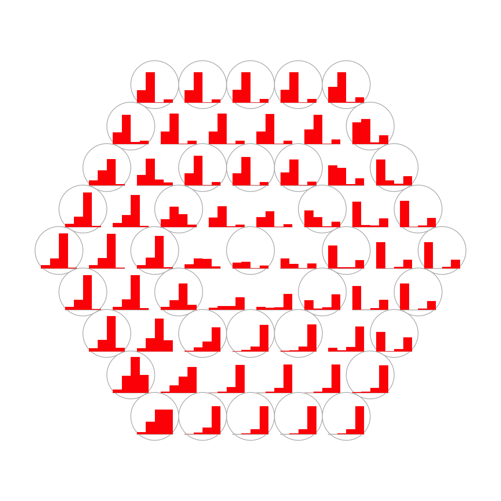

# This is a demo for postprocessing cellular prevalence of mutations in clonal populations (inferred by PyClone)
#
# The PyClone-inferred cellular prevalence dataset (containing 133 mutations across 4 samples) can be output following PyClone tutorial. In brief, PyClone takes as inputs both Allelic count data and the copy number information, and uses a hierarchical Bayes statistical model to infer the cellular prevalence for each mutation in each sample. Put it in a simple way, a sample is supposed to be a mixture of several cellular populations (clones), and for a mutation, PyClone is able to estimate cellular frequency with that mutation. Using the command 'PyClone build_table', you can produce a table-like file containing the mean/std cellular prevalence across each sample and the cluster id for each mutation.
#
# The dataset (PyClone_cellular_prevalence.txt) is stored in a form of matrix of 133 mutations X 9 columns (including 4 samples with the mean and std for each, plus the cluster id at 9th column).
# The purpose of this demo is to provide a global view of sample relationships in terms of cellular prevalence of mutations. This kind of postprocessing is particularly useful if input samples are derived from the same subject but with different conditions (e.g the disease progression, the treatment).
# Notes, mutations are clustered according to the similar cellular prevalence patterns across samples using self-organising algorithm.
###############################################################################
# (I) Load the package and import data
library(supraHex)
## import data file PyClone_cellular_prevalence.txt
input <- read.table(file="http://supfam.org/supraHex/PyClone_cellular_prevalence.txt", header=T, row.names=1, sep="\t", check.names=F)
## extract the mean cellular prevalence of 133 mutations X 4 samples
odd_indexes <- seq(1,ncol(input)-1,2) # only odd indexes (excluding the last column)
data <- input[,odd_indexes]
## check data dimensions and types
dim(data)
[1] 133 4
str(data)
'data.frame': 133 obs. of 4 variables:
$ SRR385938: num 0.0107 0.0107 0.0107 0.0107 0.0107 ...
$ SRR385939: num 0.035 0.0352 0.0351 0.0352 0.0352 ...
$ SRR385940: num 0.13 0.13 0.13 0.13 0.13 ...
$ SRR385941: num 0.665 0.667 0.666 0.667 0.667 ...
## get familar with data (looking at the first few rows of matrix)
head(data)
SRR385938 SRR385939 SRR385940 SRR385941
NA12156:AB:chr13:32906729 0.01066397 0.03503814 0.1301507 0.6648223
NA12156:AB:chr19:55494651 0.01066032 0.03515291 0.1301125 0.6666196
NA12156:AB:chr22:32587302 0.01066006 0.03512943 0.1301255 0.6664570
NA12156:AB:chr2:26699003 0.01068375 0.03518987 0.1300451 0.6671418
NA12156:AB:chr2:33487873 0.01068963 0.03519847 0.1300282 0.6672862
NA12156:AB:chr3:37053568 0.01068845 0.03519755 0.1300316 0.6673183
## As you have seen, names in row are for mutations and names in column for 4 samples (i.e. 'SRR385938', 'SRR385939', 'SRR385940', 'SRR385941'). Cellular frequencies for each mutation are in [0 1] range.
# (II) Train the supra-hexagonal map with input data only
sMap <- sPipeline(data)
Start at 2015-06-04 10:44:02
First, define topology of a map grid (2015-06-04 10:44:02)...
Second, initialise the codebook matrix (61 X 4) using 'linear' initialisation, given a topology and input data (2015-06-04 10:44:02)...
Third, get training at the rough stage (2015-06-04 10:44:02)...
1 out of 5 (2015-06-04 10:44:02)
updated (2015-06-04 10:44:02)
2 out of 5 (2015-06-04 10:44:02)
updated (2015-06-04 10:44:02)
3 out of 5 (2015-06-04 10:44:02)
updated (2015-06-04 10:44:02)
4 out of 5 (2015-06-04 10:44:02)
updated (2015-06-04 10:44:02)
5 out of 5 (2015-06-04 10:44:02)
updated (2015-06-04 10:44:02)
Fourth, get training at the finetune stage (2015-06-04 10:44:02)...
1 out of 19 (2015-06-04 10:44:02)
updated (2015-06-04 10:44:02)
2 out of 19 (2015-06-04 10:44:02)
updated (2015-06-04 10:44:02)
3 out of 19 (2015-06-04 10:44:02)
updated (2015-06-04 10:44:02)
4 out of 19 (2015-06-04 10:44:02)
updated (2015-06-04 10:44:02)
5 out of 19 (2015-06-04 10:44:02)
updated (2015-06-04 10:44:02)
6 out of 19 (2015-06-04 10:44:02)
updated (2015-06-04 10:44:02)
7 out of 19 (2015-06-04 10:44:02)
updated (2015-06-04 10:44:02)
8 out of 19 (2015-06-04 10:44:02)
updated (2015-06-04 10:44:02)
9 out of 19 (2015-06-04 10:44:02)
updated (2015-06-04 10:44:02)
10 out of 19 (2015-06-04 10:44:02)
updated (2015-06-04 10:44:02)
11 out of 19 (2015-06-04 10:44:02)
updated (2015-06-04 10:44:02)
12 out of 19 (2015-06-04 10:44:02)
updated (2015-06-04 10:44:02)
13 out of 19 (2015-06-04 10:44:02)
updated (2015-06-04 10:44:02)
14 out of 19 (2015-06-04 10:44:02)
updated (2015-06-04 10:44:02)
15 out of 19 (2015-06-04 10:44:02)
updated (2015-06-04 10:44:02)
16 out of 19 (2015-06-04 10:44:02)
updated (2015-06-04 10:44:02)
17 out of 19 (2015-06-04 10:44:02)
updated (2015-06-04 10:44:02)
18 out of 19 (2015-06-04 10:44:02)
updated (2015-06-04 10:44:02)
19 out of 19 (2015-06-04 10:44:02)
updated (2015-06-04 10:44:02)
Next, identify the best-matching hexagon/rectangle for the input data (2015-06-04 10:44:02)...
Finally, append the response data (hits and mqe) into the sMap object (2015-06-04 10:44:02)...
Below are the summaries of the training results:
dimension of input data: 133x4
xy-dimension of map grid: xdim=9, ydim=9
grid lattice: hexa
grid shape: suprahex
dimension of grid coord: 61x2
initialisation method: linear
dimension of codebook matrix: 61x4
mean quantization error: 0.00070752268441815
Below are the details of trainology:
training algorithm: batch
alpha type: invert
training neighborhood kernel: gaussian
trainlength (x input data length): 5 at rough stage; 19 at finetune stage
radius (at rough stage): from 3 to 1
radius (at finetune stage): from 1 to 1
End at 2015-06-04 10:44:02
Runtime in total is: 0 secs
visHexMulComp(sMap, title.rotate=10, zlim=c(0,1), colormap="darkgreen-lightgreen-lightpink-darkred")
sWriteData(sMap, data, filename="PyClone_cellular_prevalence.supraHex.txt")
## As you have seen, a figure displays the multiple components of trained map in a sample-specific manner. You also see that a txt file PyClone_cellular_prevalence.supraHex.txt has been saved in your disk. The output file has 1st column for your input data ID (an integer; otherwise the row names of input data matrix), and 2nd column for the corresponding index of best-matching hexagons (i.e. mutation clusters). You can also force the input data to be output (see below).
sWriteData(sMap, data, filename="PyClone_cellular_prevalence.supraHex_2.txt", keep.data=T)
# (III) Visualise the map, including built-in indexes, data hits/distributions, distance between map nodes, and codebook matrix
visHexMapping(sMap, mappingType="indexes")

## As you have seen, the smaller hexagons in the supra-hexagonal map are indexed as follows: start from the center, and then expand circularly outwards, and for each circle increase in an anti-clock order.
visHexMapping(sMap, mappingType="hits")
## As you have seen, the number represents how many input data vectors (mutations) are hitting each hexagon, the size of which is proportional to the number of hits.
visHexMapping(sMap, mappingType="dist")
## As you have seen, map distance tells how far each hexagon is away from its neighbors, and the size of each hexagon is proportional to this distance.
visHexPattern(sMap, plotType="lines")
## As you have seen, line plot displays the patterns associated with the codebook matrix. If multple colors are given, the points are also plotted. When the pattern involves both positive and negative values, zero horizental line is also shown.
visHexPattern(sMap, plotType="bars")
## As you have seen, bar plot displays the patterns associated with the codebook matrix. When the pattern involves both positive and negative values, the zero horizental line is in the middle of the hexagon; otherwise at the top of the hexagon for all negative values, and at the bottom for all positive values.
# (IV) Perform partitioning operation on the map to obtain continuous clusters (i.e. mutation meta-clusters) as they are different from mutation clusters in an individual map node
sBase <- sDmatCluster(sMap)
myColor <- c("transparent", "black")
border.color <- myColor[sBase$bases%%2 + 1] ## the hexagon frame according to mete-clusters
visDmatCluster(sMap,sBase, gp=grid::gpar(cex=1.5, font=2, col="blue"), colormap="PapayaWhip-pink-Tomato", area.size=0.95, border.color=border.color)
sWriteData(sMap, data, sBase, filename="PyClone_cellular_prevalence.supraHex_base.txt")
## As you have seen, each cluster is filled with the same continuous color, and the cluster index is marked in the seed node. An output txt file PyClone_cellular_prevalence.supraHex_base.txt. This file has 1st column for your input data ID (an integer; otherwise the row names of input data matrix), and 2nd column for the corresponding index of best-matching hexagons (i.e. mutation clusters), and 3rd column for the cluster bases (i.e. mutation meta-clusters). You can also force the input data to be output.
sWriteData(sMap, data, sBase, filename="PyClone_cellular_prevalence.supraHex_base_2.txt", keep.data=T)
output <- visDmatHeatmap(sMap, data, sBase, base.separated.arg=list(col="black"), base.legend.location="bottomleft", colormap="darkgreen-lightgreen-lightpink-darkred", KeyValueName="Cellular prevalence", labRow=NA, keep.data=T, srtCol=20)
## As you have seen, heatmap is used to visualise cellular prevalence patterns seen within each meta-cluster/base. Row side bar indicates the mutation meta-clusters/bases. The returned variable "output" (NOT a txt file) has 1st column for your input data ID (an integer; otherwise the row names of input data matrix), and 2nd column for the corresponding index of best-matching hexagons (i.e. mutation clusters), and 3rd column for the cluster bases (i.e. mutation meta-clusters). Note: it has rows in the same order as visualised in the heatmap
# (V) Reorder the taxonomy-specific components of the map to delineate relationships between taxonomy
sReorder <- sCompReorder(sMap, metric="euclidean")
Start at 2015-06-04 10:44:07
First, define topology of a map grid (2015-06-04 10:44:07)...
Second, initialise the codebook matrix (12 X 4) using 'linear' initialisation, given a topology and input data (2015-06-04 10:44:07)...
Third, get training at the rough stage (2015-06-04 10:44:07)...
1 out of 120 (2015-06-04 10:44:07)
12 out of 120 (2015-06-04 10:44:07)
24 out of 120 (2015-06-04 10:44:07)
36 out of 120 (2015-06-04 10:44:07)
48 out of 120 (2015-06-04 10:44:07)
60 out of 120 (2015-06-04 10:44:07)
72 out of 120 (2015-06-04 10:44:07)
84 out of 120 (2015-06-04 10:44:07)
96 out of 120 (2015-06-04 10:44:07)
108 out of 120 (2015-06-04 10:44:07)
120 out of 120 (2015-06-04 10:44:07)
Fourth, get training at the finetune stage (2015-06-04 10:44:07)...
1 out of 480 (2015-06-04 10:44:07)
48 out of 480 (2015-06-04 10:44:07)
96 out of 480 (2015-06-04 10:44:07)
144 out of 480 (2015-06-04 10:44:07)
192 out of 480 (2015-06-04 10:44:07)
240 out of 480 (2015-06-04 10:44:07)
288 out of 480 (2015-06-04 10:44:07)
336 out of 480 (2015-06-04 10:44:07)
384 out of 480 (2015-06-04 10:44:07)
432 out of 480 (2015-06-04 10:44:07)
480 out of 480 (2015-06-04 10:44:07)
Next, identify the best-matching hexagon/rectangle for the input data (2015-06-04 10:44:07)...
Finally, append the response data (hits and mqe) into the sMap object (2015-06-04 10:44:07)...
Below are the summaries of the training results:
dimension of input data: 4x4
xy-dimension of map grid: xdim=4, ydim=3
grid lattice: rect
grid shape: sheet
dimension of grid coord: 12x2
initialisation method: linear
dimension of codebook matrix: 12x4
mean quantization error: 1.14495176661807
Below are the details of trainology:
training algorithm: sequential
alpha type: invert
training neighborhood kernel: gaussian
trainlength (x input data length): 30 at rough stage; 120 at finetune stage
radius (at rough stage): from 1 to 1
radius (at finetune stage): from 1 to 1
End at 2015-06-04 10:44:07
Runtime in total is: 0 secs
visCompReorder(sMap, sReorder, title.rotate=10, zlim=c(0,1), colormap="darkgreen-lightgreen-lightpink-darkred")
## As you have seen, reordered components of trained map is displayed. Each component illustrates a sample-specific map and is placed within a two-dimensional rectangular lattice. Across components/samples, mutations with similar cellular prevalence patterns are mapped onto the same position of the map. Geometric locations of components delineate relationships between components/samples, that is, samples with the similar cellular prevalence profiles are placed closer to each other.
# (VI) Build and visualise the bootstrapped tree
tree_bs <- visTreeBootstrap(t(data))
Start at 2015-06-04 10:44:08
First, build the tree (using nj algorithm and euclidean distance) from input matrix (4 by 133)...
Second, perform bootstrap analysis with 100 replicates...
Finally, visualise the bootstrapped tree...
Finish at 2015-06-04 10:44:08
Runtime in total is: 0 secs
## As you have seen, neighbour-joining tree is constructed based on pairwise euclidean distance matrices between samples. The robustness of tree branching is evaluated using bootstraping. In internal nodes (also color-coded), the number represents the proportion of bootstrapped trees that support the observed internal branching. The higher the number, the more robust the tree branching. 100 means that the internal branching is always observed by resampling characters.
){kind=link}
){kind=link}
){kind=link}
){kind=link}
){kind=link}
){kind=link}
){kind=link}
){kind=link}
){kind=link}
){kind=link}